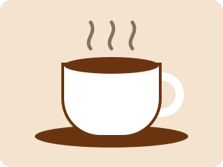

Café de especialidad, tostado en casa
Seleccionamos granos de pequeños productores de Veracruz, Chiapas y Oaxaca para que tu coffee break sea el mejor momento del día.
Ver productos
Nuestra historia
Abrimos en 2015 con una sola máquina y una idea sencilla: servir café honesto.
Nuestro lema viene del italiano, il caffè è un piacere
,
y lo aplicamos en cada taza.
¿Por qué elegirnos?
-
Origen trazable
Conocemos a cada productor y pagamos un precio justo por su cosecha.
-
Tueste semanal
Tostamos lotes pequeños cada semana para garantizar frescura.
-
Panadería propia
Horneamos todos los días desde las 6 de la mañana.
Lo que dicen nuestros clientes
El mejor capuchino de la colonia y un servicio muy amable.